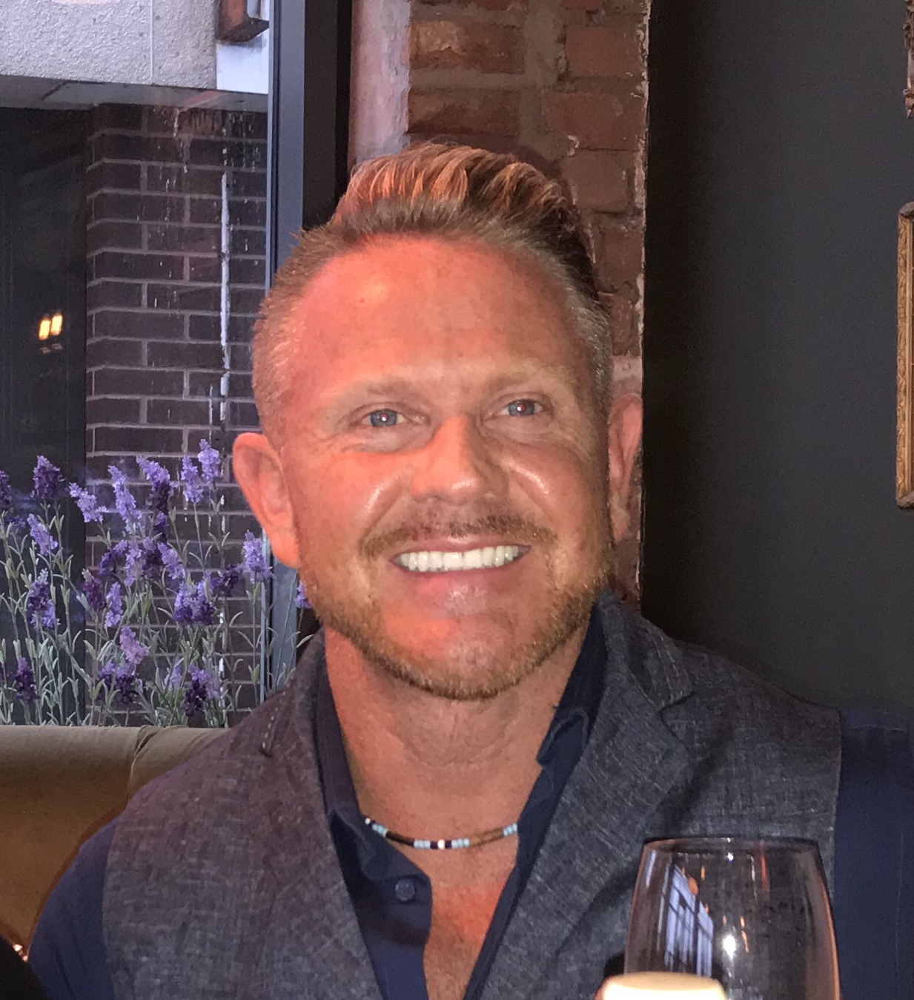

Michael J
Life Purpose...
“A life of limitless possibilities is always the only option”

Thank you for this life changing moment to get to know a little of my own life journey and why I do what I do today with Michael J Life Purpose – life coaching, personal training, yoga therapy and massage.
The reason you have got this far already means that either someone you know told you about me and how I have transformed their life and you feel like change is on the cards for you, or you have looked up life coaching, yoga and fitness and are personally in need of a new direction or focus. Either way, you are here in this present moment and your life is about to get a whole lot better.
What do I do?
Whether you need to lose weight, get fit and active, or find a great diet that fits your lifestyle, I can help you discover it. Whether you need to find a new job, get sharper at your job, discover a balance between your work and home life, overcome stress or anxiety, deal with emotional difficulties, improve your relationships, be a good lover or even find one… my approach as your life coach, personal trainer and yoga therapist will help you change your life. Welcome to the beginning of becoming a better you!
So many of us will only ever glimpse the dreams we would really like for our lives, but the reality is we can ALL live the life we want. You may be asking how is that possible? I can assure you that the key is this - if you take just 15 minutes with me to start to think about what you really would like for your life, who you could be, what body you would like, what relationship you would love to have, you will be making a start to making it happen. Dreams can only start with you.
I began that journey of realisation seven years ago and since discovering self development and that I could change the way things were, I have not once looked back.
At the age of 42, after a life of constant heart ache, battling with myself and my headstrong career to be a top leader in the education world…and then once I got my dream role being wrongfully dismissed, I was a bit of a mess. The truth of the matter was that I had been bullied all through my life but was used to it. I allowed people to walk into my world and abuse me because that is how I always knew it…so I accepted it. That was my lot in life. Work my butt off only to be judged and hurt by the people I had respected and cared about. The reality? I was used to dealing with adversity and hurt. My mind and behaviours were conditioned by habit. I was ready to give up.
However, when I lost my job, I decided to make an important and crucial decision - I had to change. I realised that I had been blaming everyone else. Wallowing in my own self pity and that I was the victim. I woke up one morning and realised that I had given myself away, allowing others to control me for years. Without realising it, I had let others slowly destroy me and take over my life. But there was a subtle shift in my thinking. I decided that I would take back that control and be in control. I didn’t know how I was going to do it, but it began with one simple decision. I would just start to make that change. Since that illuminating life moment, I have not looked back. Today, I still live in a world just like you, but I now live every day with a clear sense of direction and purpose. Physically, I am 3 stone lighter, fitter than I have ever been in my life and I look and feel great at the age of 49.
For the past 7 years, I have worked continually and with a passion to support and help others change their lives for the better through life coaching, personal training, being a dedicated yoga teacher and a sports massage therapist. A bit different from a career in language teaching of twenty years I admit. But today, I am living a fulfilled life and each day I truly enjoy being me. I have a great marriage, a wonderful famiIy life with my three grown up children and a granddaughter, and I continue to develop myself, practise self care and learn on a daily basis. I have wonderful clients and work with some of the leading business men and women in the UK. I have discovered how to enjoy life and do the things I only ever dreamed of!
My mantra for each day is that I want to learn, love and respect others so that I can grow to be an even better version of myself. This way of living is the best way. It is positively infectious and the results with the people I work alongside are staggering!!
Who will I be to you?
I am a person who will find and create the best version of you because I have learnt the art of finding the best version me. I have an authentic, intrinsic and intuitive ability that will inspire and motivate you to discover who you truly are and be able to live the very best version of yourself.
How does Life Coaching work?
Through an initial one to one conversation, I will discover how to get the best out of your life. With an authentic and non judgemental approach. Together we will plan and set realistic goals and challenges which are purposeful and meaningful. Together we will challenge your current thinking and beliefs and you will find the answers in yourself.
Who can benefit from Life Coaching?
Life coaching is for everyone. Any age, at any stage of life. All I need form you is to be open and willing to change and desire a new and better life.
My aim is to make the process achievable, realistic and meaningful, so that through developing new habits, changing your thought processes and giving you a sense of true achievement, you will find real success in your own life.
What can I offer you?
A life filled with potential. I am highly qualified and accredited in each of the following disciplines and am able to offer life coaching and bespoke training in the following areas
• Yoga Lifestyle and Breathing Therapy
• Yoga for trauma and anxiety
• Personal Fitness and Exercise programmes and classes
• Life Coaching for purpose- personalised programmes that work
• Sports Massage Therapy for general health and specific sports injuries
• Nutritional Life plans that are meaningful and sustainable
Finally….
I really do look forward to the opportunity of working with you. I trust you will step out and embark upon a journey with me on one or more of the life purpose programmes described on this website.
Remember, life is short…we only get one chance. Make yours matter today. Discover who you truly are and fulfil a life with limitless possibilities.
Yours in true humanship,